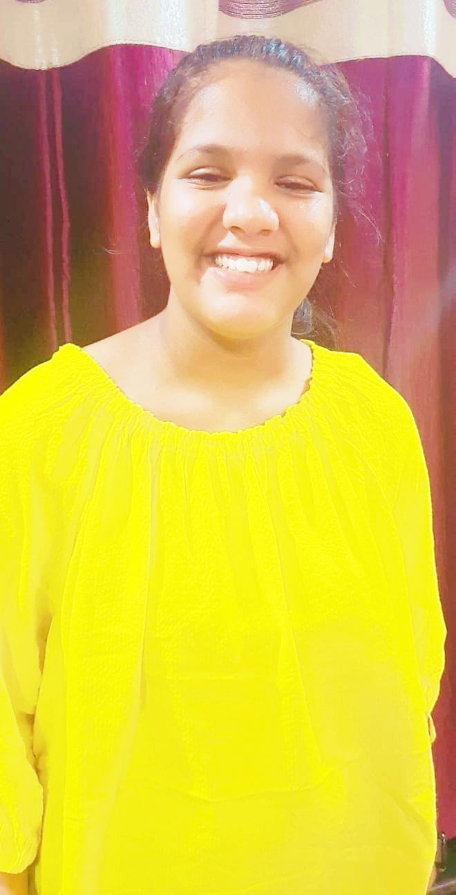

Email: ishitadalvi2006@gmail.com
Phone: +919869224380
LinkedIn: ishitadalvi
GitHub: ishitadalvi
Location: Mumbai, Maharashtra, India
 |
I'm a Computer Science Engineering student with a strong interest in software development, web technologies, and UI/UX design. I enjoy building creative and user-friendly projects while continuously learning new technologies. I'm passionate about problem-solving, exploring innovative ideas, and growing as a developer through hands-on experience and collaboration. |
June 2026-July 2026
June 2026-July 2026